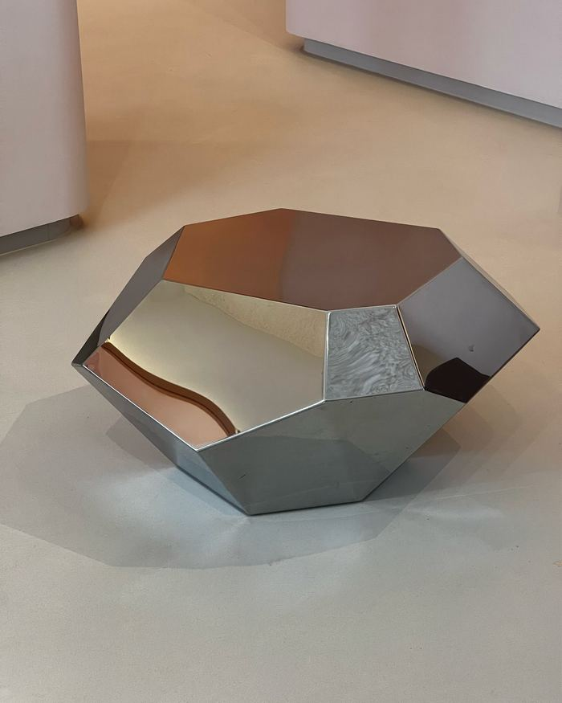
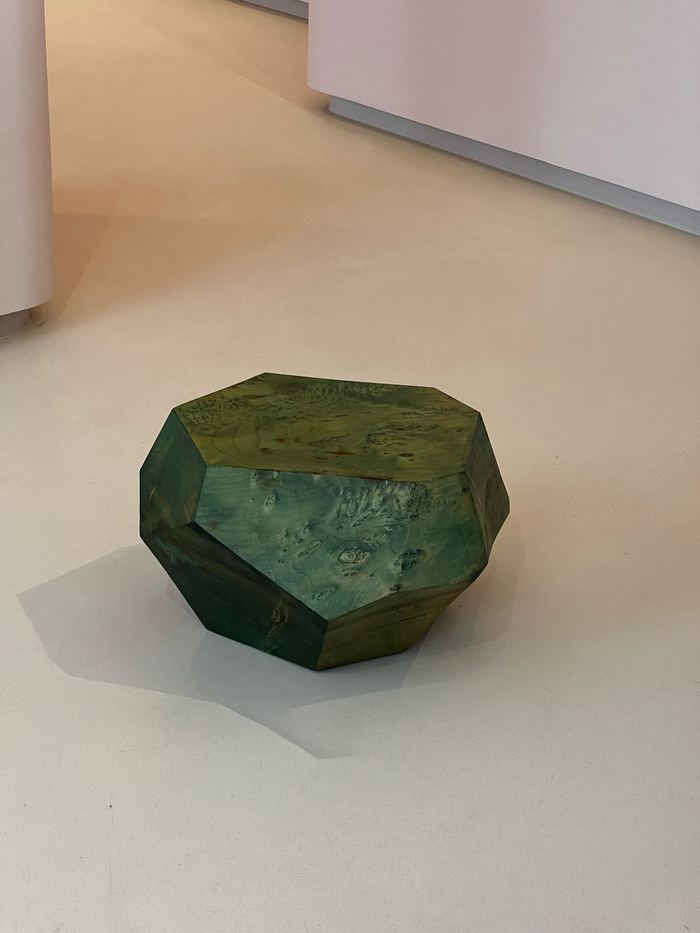
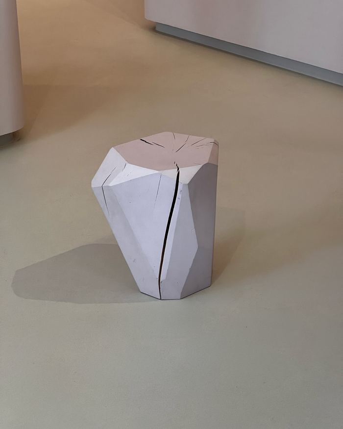
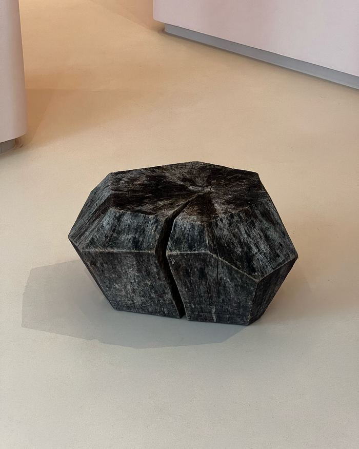
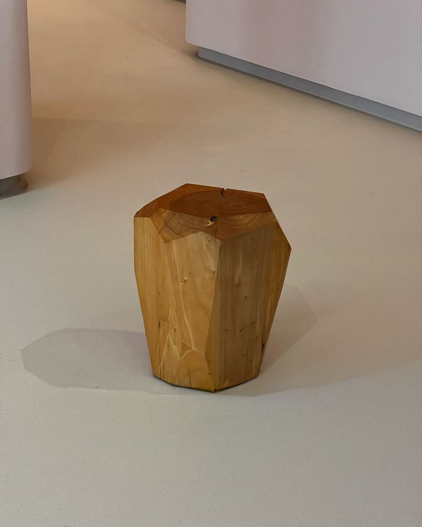
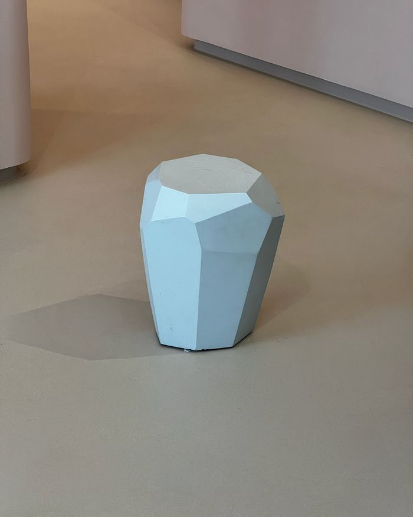
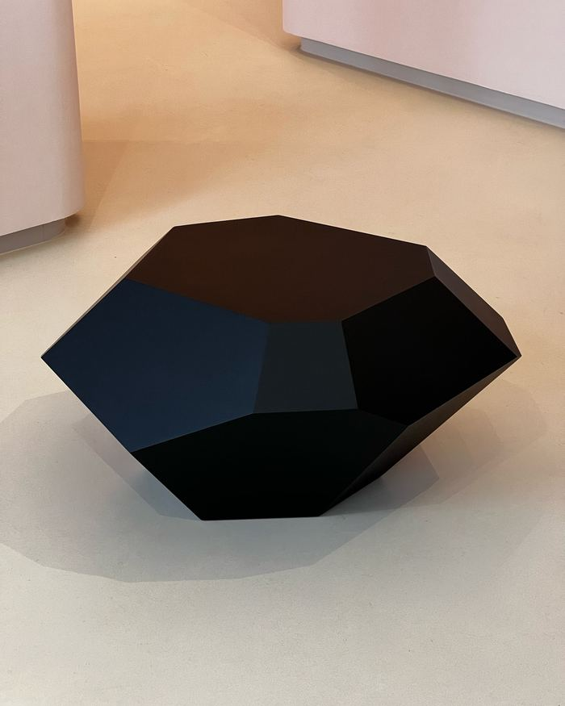

Season 02 — GROUNDGallery 2 — floorAll makers →
Aad Kruiswijk
Aad Kruiswijk works at the intersection of art, technology and nature. With MineralisM he develops sculptural crystal forms that are identical in contour but radically different per material. His work is defined by a technical precision rooted in constraint: the form is a direct trace of the process that made it.
Instagram · Message Aad directly
100% of the sale proceeds go to the maker. Aad Kruiswijk works independently, without gallery representation.
—Works8 recorded

MDF · 80 × 140 × 160 cm
€ 3.500,– available

High-gloss polished stainless steel · 43 × 80 × 70 cm
€ 5.500,– available

Solid wood, Amsterdam city timber · 30 × 50 × 50 cm
€ 1.200,– available

Solid wood, Amsterdam city timber · 43 × 40 × 30 cm
€ 700,– available

Solid wood, Amsterdam city timber · 43 × 80 × 70 cm
€ 1.400,– available

Solid wood, Amsterdam city timber · 43 × 40 × 30 cm
€ 700,– available

Solid wood, Amsterdam city timber · 43 × 40 × 30 cm
€ 700,– available

MDF in casein paint · 43 × 80 × 70 cm
€ 1.750,– available